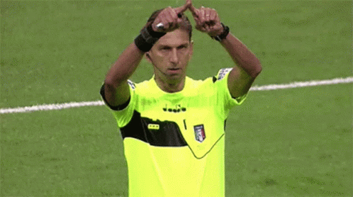
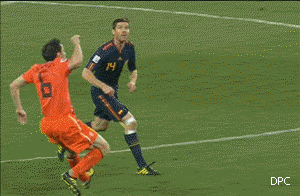
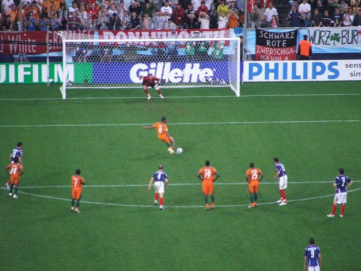

¿Como se creo el futbol?
Ebenezer Morley es reconocido como el padre del futbol, aunque no como el creador del mismo. Morley fue el fundador del Barnes Footbal Club y fue el encargado de reunir a los representantes de 12 clubes, gracias a una letra que escribió en el periodico, Bell´s Life. En la junta entre los 12 equipos de aquel tiempo, la cuál ocurrió el 26 de octubre de 1863 en Londres en la Freemasons Tavern, se estableció el reglamento del juego, dejando atrás la época en que cada club tenía sus propias normas. En 1940 nació la FIFA, organismo que regula el balompié en casi todos los países del planeta. Asimismo, la IFAB (International Football Association Board) se encarga de proteger las reglas del futbol.
Reglas del Futbol
1.La cancha
Los 22 jugadores disputan e partido en un terreno que mide entre 90 y 120 metros de largo, por no menos de 45 y no más de 90 metros de ancho. Para los torneos oficiales la Fifa advierte que las medidas son: 64m x 100m y un máximo de 75m x 110m.
2.El balon
La pelota debe contar con unas medidas de entre 68 y 70 cm, con un diámetro de entre 21,65 y 22,29 cm.
3.Equipo de los jugadores
Los 11 jugadores del campo deben portar una caiseta de su club, con nombre y número. Una pantaloneta corta, medias largas, canilleras y zapatos especiales para jugar. Los porteros usarán guantes y uniforme distinto a los colores de los demás jugadores.
5.Árbitro
Es la persona encargada de dirigir el partido. Tiene la responsabilidad de vigilar que las reglas se cumplan. Debe señalar saques de banda, de meta, de esquina, goles, fueras de lugar, goles. Hoy está apoyado por el VAR.
6.Faltas
Son las agresiones, jugadas peligrosas, golpes, choques con fuerza desmedida entre los jugadores. hay otras sanciones, como las manos, que es el contacto con el brazo o mano de algún jugador de campo (no el portero dentro del área) con el balón.
7.Tiro de esquina
Si el jugador qu saca el balón por las líneas del arco es el que defiende su soprtería el juez señalará tiro de equina. Este se cobrará por la una de las puntas más cercanas a donde salió el balón.
8.Saque de meta
Cuando el balón abandona el campo en las líneas del arco. Si el último jugador en tocarla fue un rival, el portero reanudará el encuentro desde su área pequeña.
9.Penalti
Se determina cuando un jugador comete una infracción dentro de su propia área y concede un tiro directo desde el punto penal. Este se sitúa a 11 metros de la portería, misma que estará protegida por el portero al momento del cobro.
10.Saque de salida
El árbitro será el único personaje indicado para dar el comienzo del juego. El jugador encargado de hacer el saque pateará el balón hacia su lado y el reloj comenzará su marcha.
Formaciones mas conocidas
¿Que es una formacion?
Una formación de fútbol es simplemente la posicion de los jugadores en el campo. Esta puede ser muy general o muy específica.
4-4-2
Se trata de una disposición en el campo en la que cuatro defensas (dos centrales y dos laterales), cuatro centrocampistas (dos extremos y dos centrales) y dos delanteros (un delantero centro y un extremo) se colocan de forma estratégica en el terreno de juego. Esta formación se caracteriza por ser muy equilibrada. Además, permite un buen grado de flexibilidad, tanto en la defensa como en el ataque.
Este video muestra como funciona en el campo: